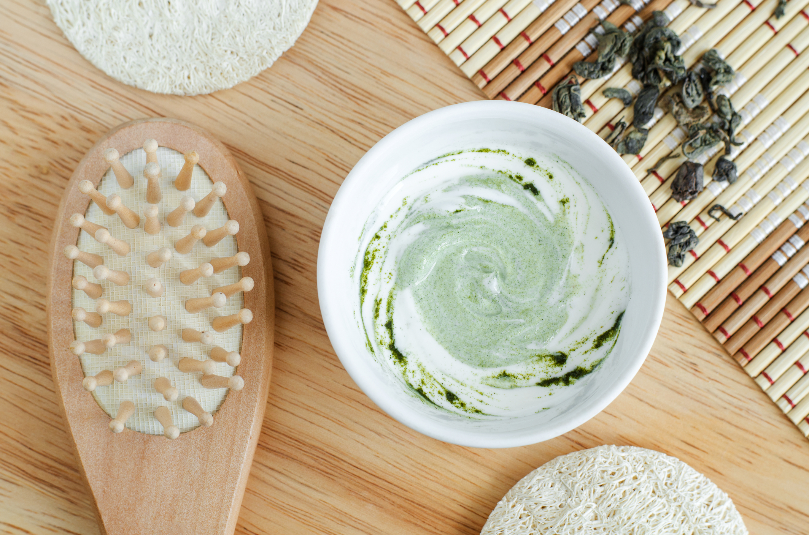

Services
We provide a wide variety of treatments including: facials, massages, and other body treatments. 
- Classic Sweedish • 60 minutes $85 / 80 minutes $120
With long smooth strokes, kneading, and circular movements we are able to relax muscles and push out excess lactic acid in the muscles. This massage is very gentle and relaxing. Recommended for first time massage.
- Deep Tissue • 60 minutes $100 / 80 minutes $130
With slower strokes and friction techniques this massage targets the deep layers of the muscles. This massage is for chronically tight or painful muscles, scar tissue from surgeries or injury and repetitive strain. It is not uncommon to be sore for a day or two after this massage.
- Hot Stones • 80 minutes $135
The use of hot smooth basalt stones during this massage allows the belly of the muscle to relax easier and faster than the traditional Swedish (classic) massage. This also allows the therapist to apply deeper pressure if needed. Hot stones improve circulation and calms the nervous system.
- Classic Beauty • 60 minutes $85
A complete facial that will restore the look of healthy glowing skin. Designed for all skin types, this treatment includes cleansing, exfoliation, extractions, custom mask and hydration.
- Green Apple Enzyme Peel • 60 minutes $120
Eliminate the appearance of fine lines and wrinkles while firming the skin using Juice Beauty’s organic Green Apple Enzyme collection.
- Deep Breath • 45 minutes $60
Using certified organic skincare, this facial detoxifies and replenishes. Perfect for those not a fan of extractions.
- Organic Body Polish + Hydrating Wrap • 80 minutes $125
This experience begins with dry brushing and continues with a luxurious lavender shea butter body polish. Your body is then drenched with organic oils and wrapped in a cocoon to encourage absorption and hydration.
- Organic Body Polish • 45 minutes $85
This exfoliating treatment combines dry bushing with an organic exfoliant to sluff away dry, dead, skin cells while smoothing and toning the skin.